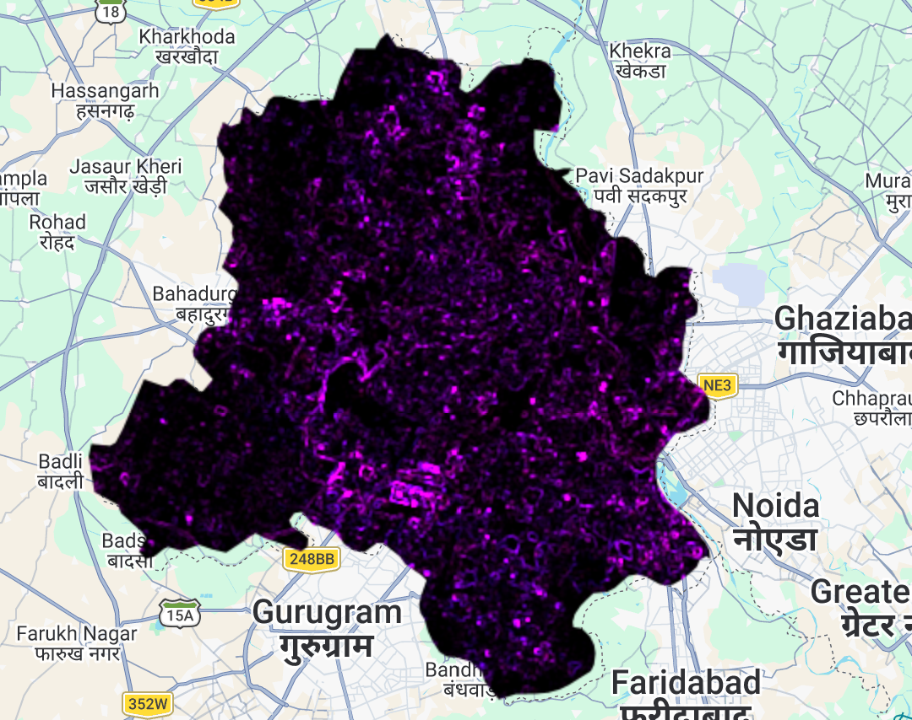
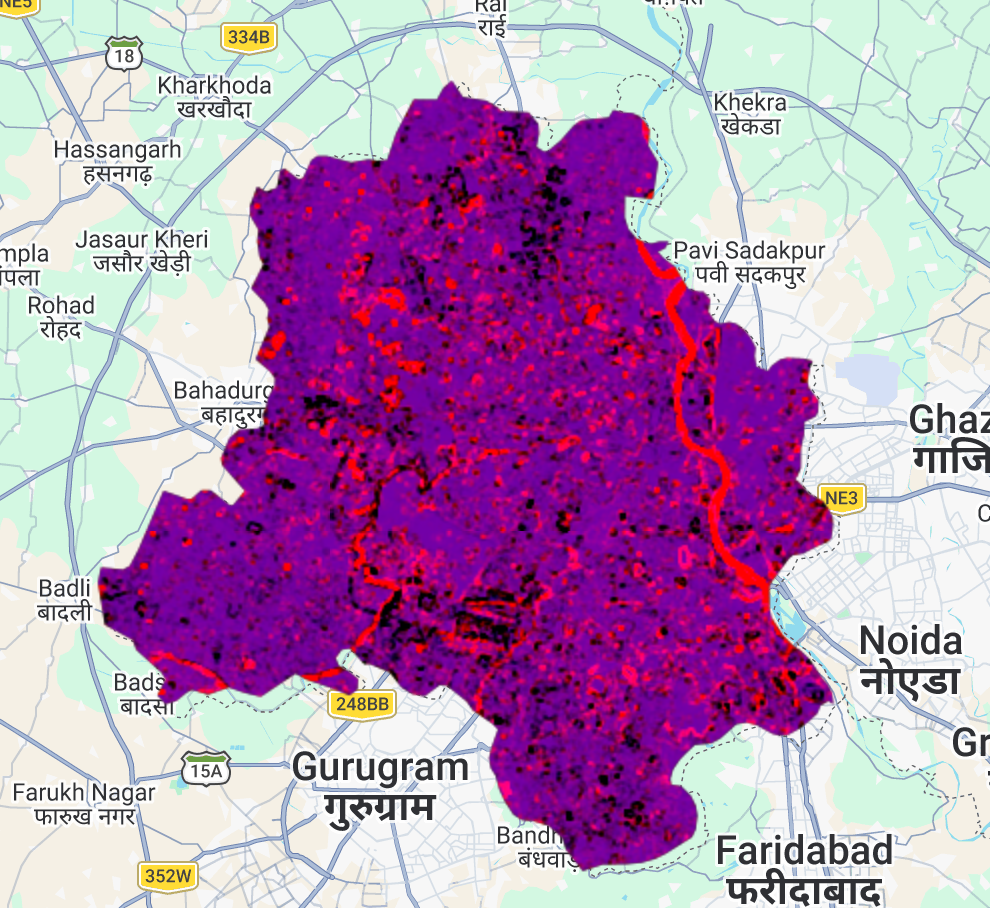
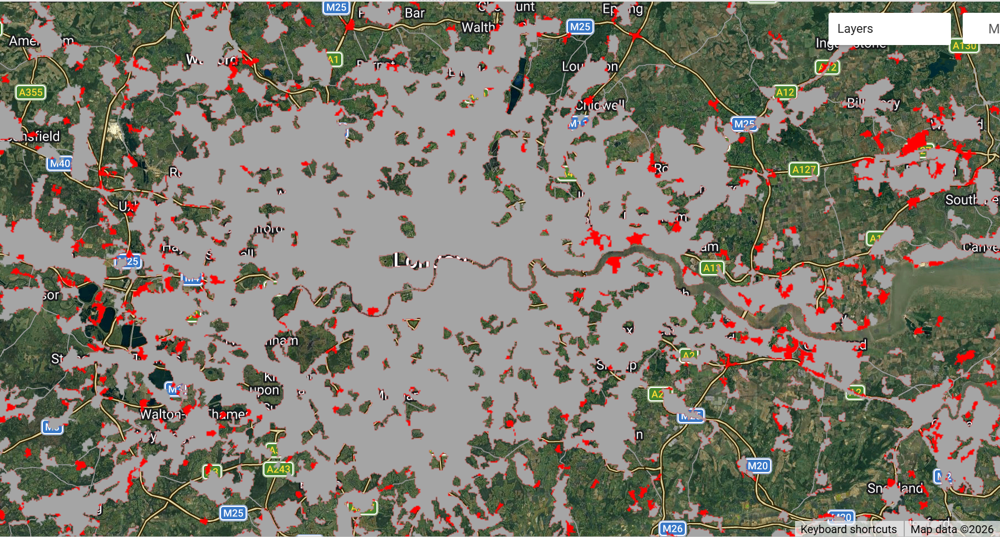
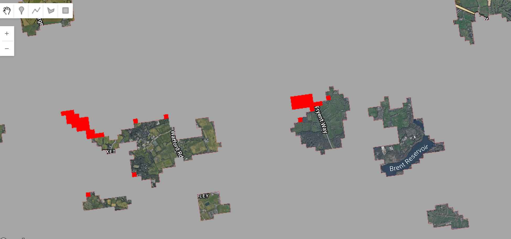
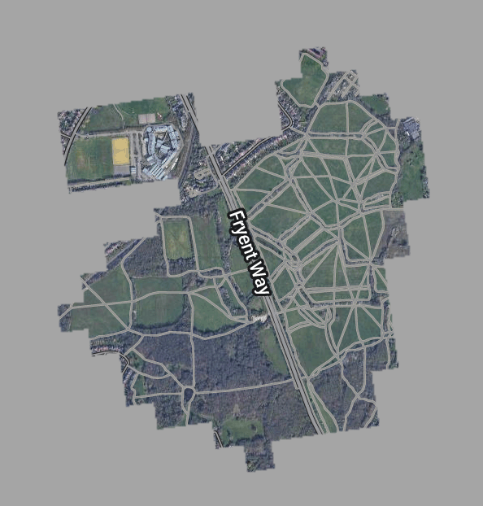

6 Week 6: Introduction to Google Earth Engine
6.1 Summary
This week we started working with Google Earth Engine (GEE), first getting a general understanding of how it works and what makes it so useful for geospatial analysts.
6.1.1 GEE Data catalog
Arguably one of the most impressive things about GEE is the extensive data catalog of satellite imagery that users can pull into their workspaces and see visualised within seconds.
The GEE catalog of satellite data makes over 40 years of historical imagery and scientific datasets such as climate models available for its users. The key satellites available for users to browse are:
Landsat 1-9 (data from 1982-Present)
Sentinel 1(A/B), 2(A/B), 3 & 5P (data from 2014-Present)
US National Agriculture Imagery Program (NAIP) (data from 2003-Present)
Moderate Resolution Imaging Spectroradiometer (MODIS) (data from 1999-present)
In addition to this satellite data, GEE brings together environmental and scientific datasets such as climate projections available alongside terrain and land cover data.
Having this one-stop-shop for satellite and environmental data has proven to be invaluable to researchers across the world which is evident given GEE’s exponential growth in academia, despite only being published in 2015. Unlike software like QGIS, GEE enables fully reproducible analysis as users can create spatial applications using open-source code which can be easily shared.

6.1.2 How does GEE work?
In terms of how GEE works, it’s essentially hosted on Google’s cloud servers which allows for more efficient querying of data.
As a user you access Earth Engine through an API, you have a library of over 800 functions to run on the datasets available from the GEE catalog or private datasets which you can import (Gorelick et al. (2017)). What would normally take hours in other software can be achieved in minutes and seconds in GEE simply because of the computational infrastructure that shifts the intensive queries across servers.
To write queries in GEE you use JavaScript which again works well because there is no requirement to install Java on your personal machine. Only basic JavaScript is required to write the queries which can apply mathematical, geospatial or machine learning to satellite imagery and other datasets.
6.1.3 Data in GEE
There are some things to get used to when using GEE to explore satellite data, and a couple of key terms to define.
| Term | Definition |
|---|---|
| Object | The basic building block of GEE, it can be a raster, vector, string, number. Each object has a class. |
| Class | A group of objects to which specific functions (or methods) can be applied. An example of an object class can be an ImageCollection or an Array. |
| Function | An action or method that can be applied to an object, such as map() used for ImageCollections. |
| Image & ImageCollection | Raster image or a stack of Raster images. |
| Feature & FeatureCollection | Vector dataset like a point, polygon or line, a collection is simply multiple vector datasets. |
| Scale | Pixel resolution, the resolution is set by the output not the input of the data. This means things like the zoom scale of your map will affect the scale used by GEE. |
| Client side | Frontend side, the user facing side of your application i.e. in the browser. |
| Server side | Backend side, processes the query. In GEE anything starting with ee in our script will be on the server side. |
6.1.4 Joining data
Joining data is another functionality of GEE, allowing users to combine spatial datasets. This can be especially useful when dealing with large spatial datasets such as raster ImageCollections, and you can bring in images from different satellites together.
I can imagine this can be really useful when trying to do longitundal studies using both Landsat and Sentinel data could be a useful way to get more time coverage (as long as both are resampled to match resolutions).
6.1.5 Reducer functionality
Reducers in GEE help users aggregate data, this can be over time, over space, bands or other. It enables researchers to extract statistics from data such as averages for neighbourhoods.
I found these functions most interesting to play around with during the practical, and it was also interesting to explore the glcmTexture function which we were briefly working with in R a few weeks before, but it was much nicer to be able to interact with the map in GEE.
Here I was able to take the GLCM around each pixel of every band in the satellite image, turn each of these pixel values into integer pixel values, for the image below we kept all SR bands with Contrast and Dissimilarity to get a better idea of land cover helping to identify areas of high contrast like urban settings. As the size for GLCM texture was 1 (a 3x3 grid i.e. the size of a neighbourhood) this will focus more on fine texture differences most useful for identifying urban areas, but may not be as useful for computing agriculture or greenery.
var glcm = clip.select(['SR_B1', 'SR_B2', 'SR_B3', 'SR_B4', 'SR_B5', 'SR_B6', 'SR_B7'])
.multiply(1000)
.toUint16()
.glcmTexture({size: 1})
.select('SR_.._contrast|SR_.._diss')
.addBands(clip);
Map.addLayer(glcm, {min:14, max: 650}, 'glcm');
Nevertheless, computing the PCA to show variance really helps to give more detail to the map in terms of being able to see water features, as well as roads and buildings. Although at a 30m scale due to the Landsat data this could be improved with running this analysis on 10m Sentinel data.

I think it will be interesting to see how PCA and texture analysis can be used alongside machine learning algorithms which will be covered in the upcoming weeks. In particular looking at classifying and forecasting change, such as looking at urban expansion.
6.1.6 Limitations
Although this analysis came together really quickly in GEE I have noticed that when re-running the script it was a little slower taking a few minutes to load, but there were a lot of PCA layers that needed to load and I wonder if there are also ways to streamline scripts so they run quicker after initial analysis is done.
Other general limitations of GEE are:
Limits data uploads to 250GB per data upload.
The user is still limited by the client side functions which run on the user’s browser that could be limited by the specifications of their system.
Satellite data which needs to be pre-processed takes around a month so GEE is unable to create close to Live monitoring applications.
Using it in a local government setting may not be possible as data is stored on Google’s servers, some may find this a security risk.
6.2 Applications
There are many applications of GEE, this week I enjoyed reading Duan et al. (2019) which gave a really useful outline of the applications of GEE across vegetation, urban settings, atmosphere and even archaeology.
In terms of applications for my work I was interested to read a bit more about the urban applications of GEE. I decided to look at a tutorial from the ‘Fundamentals and Applications’ chapter of the Jeffrey A. Cardille (2023) Cloud-Based Remote Sensing with Google Earth Engine book.
In this particular tutorial I used the land cover classifications from the Copernicus CORINE Land Cover dataset for urban classes to look at urban classification change across time In London between 2000 and 2018.

Following the code from Stuhlmacher and Goldblatt (n.d.) the gray areas in the map above show the urban extent in 2000, while the red show the urban expansion as of 2018.

Zooming more closely into some areas of Brent you can see the increase urban areas near Fryent Park, this is likely due to the building of JFS School, which opened in 2002 and expansion of some neighbourhoods in the surrounding area. You can see this below with the 2000 urban extent in Gray and the 2026 Google Earth basemap which shows the school.

To take this analysis further I could compute some zonal statistics zonal statistics like the percentage of urban expansion per Ward or LSOA might be something to explore in the future. Identifying which areas of a borough are experiencing more construction might be a good way of further analysing gentrification or potentially looking at biodiversity loss.
However, I also think where regeneration takes place on already built up urban areas, those changes would need alternative methods to help identify who they’ve changed. This is where aerial photography might offer more value in terms of comparison, or some kind of SAR data potentially.
6.3 Reflections
My main takeaways from this week were thinking about how I could use GEE for my work in Local Government. There is definitely a debate having data stored in Google’s servers but using publicly available satellite data to create useful spatial application or run analysis for London Boroughs should not be a problem as long as no Council data is used.
I think it would be really interesting to see whether there are use cases that can be developed for local authorities to purchase higher resolution data e.g. from SPOT or Airbus satellites and be able to perform analysis around urban vegetation density for environmental monitoring purposes. I think 30m resolution per pixel is definitely not as useful when looking at London Borough level, and even 10m can sometimes cause too much pixel generalisation to be able to identify features in more dense urban settings. However the cost limitations with purchasing higher resolution imagery is a limitation here as budgets in Local Authorities are quite tight.
I can see how using GEE would be useful alongside machine learning algorithms for example to identify things like illegal fly tipping as was recently reported in Oxfordshire, the scale of this incident was so large that it could have been identified earlier using remotely sensed data. On the whole however, we currently rely on reports of fly tipping through applications like Fix My Street so any kind of monitoring through remote sensed satellite data would need to have both high temporal and spatial resolution to identify smaller sites of fly tipping.